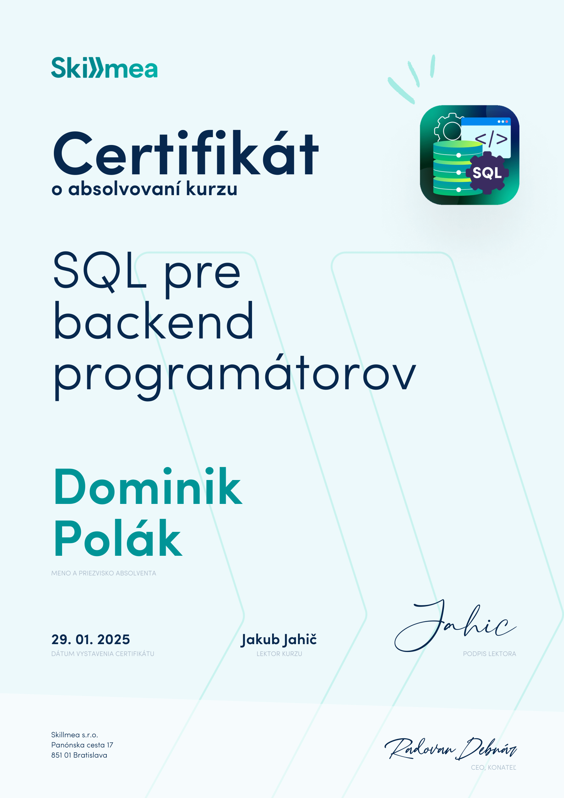
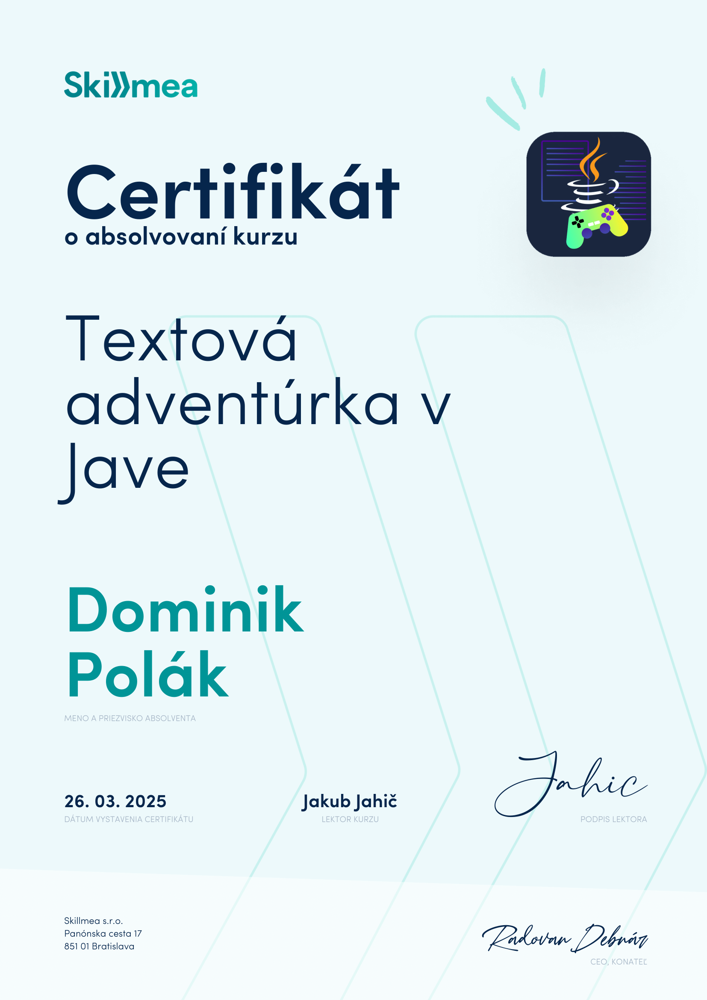

JAVA OOP
Čo som sa naučil v kurze Java OOP🧠
Kurz mi pomohol pochopiť základy objektovo orientovaného programovania v Jave. Pracoval som s triedami, objektmi, dedičnosťou,
polymorfizmom, rozhraniami a abstrakciou. Vďaka praktickým úlohám a kvízom som si upevnil teóriu a získal väčšiu istotu pri písaní čistejšieho, elegantného kódu. Kurz bol jasne vysvetlený a podporený reálnymi príkladmi, ktoré mi pomohli rýchlejšie pochopiť súvislosti.
-1.png)
Spring Boot
🕐 7h 13min 📚 61 kapitol 🎯 Pokročilý
V tomto kurze som sa naučil vytvárať webové aplikácie pomocou Spring Boot – najpoužívanejšieho Java frameworku v praxi. V rámci kurzu som vytvoril vlastný systém pre správu úloh s pripojením na databázu cez JDBC aj JPA (Hibernate).
Kurz ma naučil princípy REST API, dependency injection, návrh databázy, integračné testovanie a deployment aplikácie do cloudu. Získal som pevné základy pre tvorbu backendov v reálnom svete.
Tento kurz výrazne posunul moje programátorské zručnosti a pripravil ma na pozíciu Junior Java Developera.

SQL
SQL pre backend programátorov 💾
V tomto kurze som sa naučil základy SQL so zameraním na MySQL. Spoznal som rozdiel medzi relačnými a nerelačnými databázami,
prehľadávanie dát, joins, prácu s tabuľkami aj návrh vlastných databáz.
Kurz je plný praktických príkladov a dal mi pevný základ pre prácu s databázami ako backend programátor.
Zvládol som filtrovanie, manipuláciu s tabuľkami aj vytváranie databáz od nuly.

CRUD aplikácia
Java + MySQL CRUD aplikácia 🗂️
V tomto kurze som vytvoril konzolovú Java aplikáciu pre správu kontaktov prepojenú s MySQL databázou. Vďaka JDBC som
implementoval CRUD operácie – vytváranie, čítanie, aktualizáciu a mazanie kontaktov priamo z konzoly. Kurz mi ukázal, ako vyzerá reálny projekt v Jave, ktorý pracuje s databázou. Posilnil som si schopnosti v práci s JDBC, testovaní aplikácie a naučil som sa aj vyhľadávať dáta podľa emailu.
Stream API
Stream API a Generické typy v Jave 🎯
V tomto kurze som sa naučil, ako písať čistejší a efektívnejší Java kód pomocou Stream API a generických typov. Získal som prehľad o funkcionálnych prvkoch ako map, filter, reduce, a naučil sa pracovať s lambdami, funkčnými rozhraniami a moderným spracovaním kolekcií.
Kurz mi ukázal rozdiel medzi imperatívnym a funkcionálnym štýlom kódu a pripravil ma na to, ako sa dnes píše Java vo firmách.

GitHub
Git a GitHub pre Java programátorov 🗂️
Tento kurz ma naučil pracovať s Git-om – nástrojom, bez ktorého sa nezaobíde žiadny vývojár. Vysvetľuje základné príkazy Git-u,
ako projekt verzionovať a ako ho zdieľať cez GitHub. Všetko je ukázané na príklade Java projektu, takže som mohol priamo precvičiť to, čo využijem v praxi. Vďaka tomuto kurzu viem, ako spolupracovať v tíme a ako si vytvoriť portfólio na GitHub-e.

Textová adventúrka
Textová adventúrka v Jave 🎮
V tomto kurze som si naprogramoval vlastnú textovú adventúru a popritom sa naučil pracovať so súbormi, náhodnými číslami,
vstupom od používateľa a hernou logikou. Kurz mi ukázal, ako rozdeliť kód do balíčkov, ako refaktorovať a ako zorganizovať väčší projekt. Je to zábavný spôsob, ako si precvičiť Javu a vytvoriť niečo, čo môžem ukázať aj na GitHub-e.
